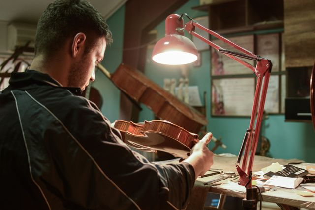

El cuidado de los instrumentos de cuerda
La madera de una guitarra es sensible a los cambios de humedad y temperatura. Un ambiente muy seco puede provocar que la madera se agriete, mientras que el exceso de humedad puede hincharla y afectar la afinación. Lo ideal es mantener el instrumento en un ambiente con humedad relativa entre 45% y 55%.
Guardar la guitarra en su estuche cuando no se usa, lejos de fuentes de calor directo (como ventanas con sol o calefactores), prolonga significativamente su vida útil.
Finalmente, un cambio de cuerdas periódico (cada 2 a 3 meses con uso regular) no solo mejora el sonido, sino que evita la oxidación que puede dañar el diapasón. En Sonido Vivo contamos con set de cuerdas para todo tipo de guitarra en nuestra sección de accesorios.